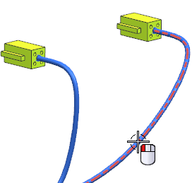

Select Overstock .
Click Specify Overstock.
You need to use 25mm long beige vinyl sleeving with a thickness of about 0.13mm.
If you happen to already know the overstock you want to use, you can select it directly from the Member View box. In this case, the catalog number you need is Sleeve_0203_mm.
In the Search group, type 0203 into the search box.
回车。
From the Member View list, select Sleeve_0203_mm.
Click the middle mouse button.
On your Selection bar, from the Method list, make sure Standard is still selected.
Select the segment of the routing that goes into the connector on the outside meter.
